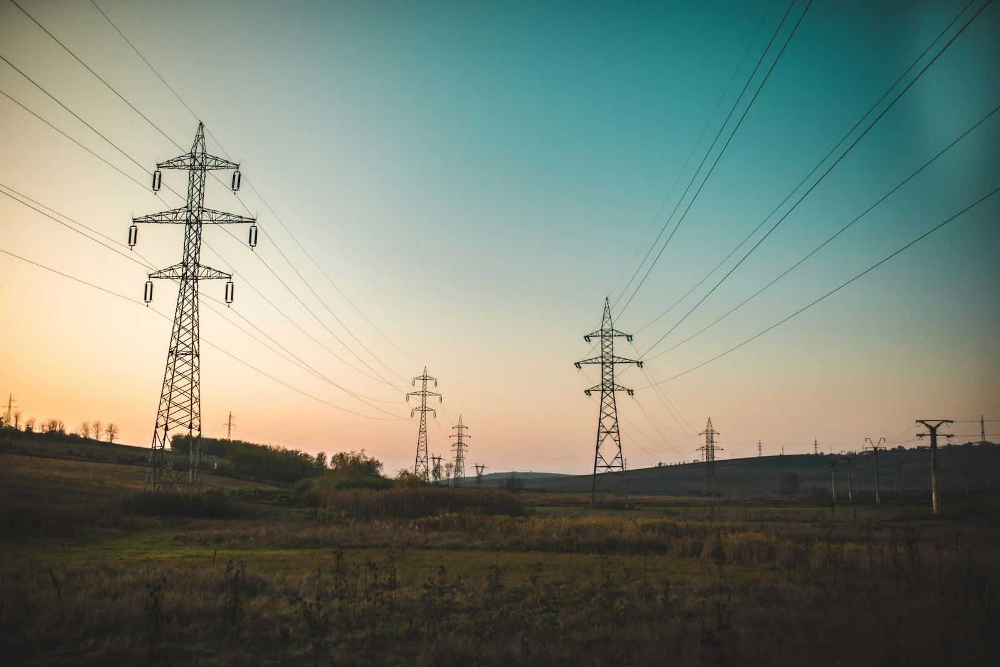
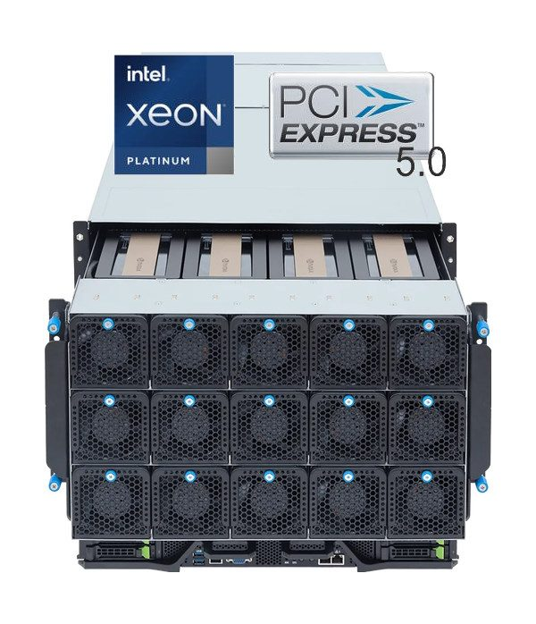
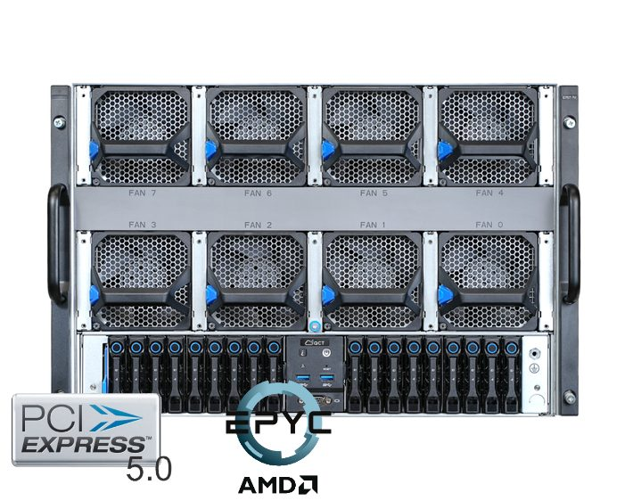
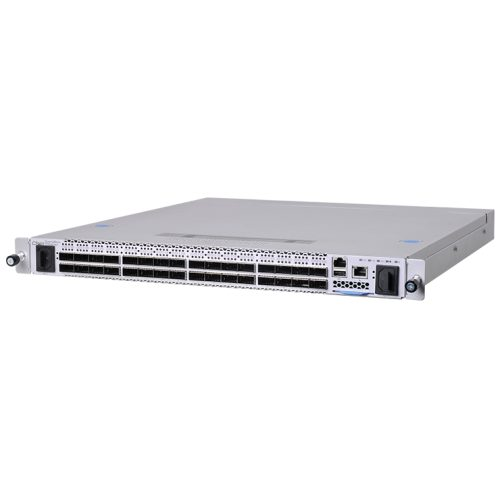
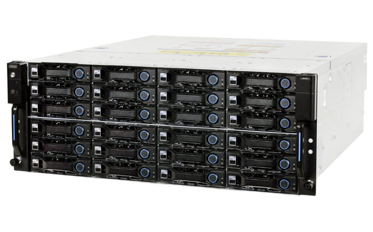

The AIDC chain
Eight links from the transmission line to the token.
An AI data centre is a power project, a construction project, a hardware project and a software operation at the same time. QORINAI is organised around all eight links so that nothing falls between contracts.
Link 01 · Land & power
The power process runs first.
State pipelines carry gigawatts of planned data-centre capacity; only a fraction will be energised this decade. The binding constraint is a formal, rules-based connection — so that is the first thing we secure.
Site selection & due diligence
Freehold parcels beside EHV corridors, zoning and overlay review, easements, topography, water and sewer capacity, carrier pit-and-pipe. We screen for a site that can be energised, not just built on.
Connection enquiries & studies
Transmission connection enquiries under the National Electricity Rules, distribution enquiries with the local network, connection-option assessment (new terminal station cut-in vs 220 kV extensions), contingency limits, fault-level ratings, power-factor and reactive requirements, system-strength charges versus remediation schemes.
Energy architecture
Three supply layers that back each other up: the transmission connection as the end state, an interim distribution pathway to start construction and early IT load, and on-site gas firming with battery storage so the campus can ramp on schedule. Behind-the-meter power stations and take-or-pay PPAs where the site allows.
Staged energisation plan
Loads above the credible-contingency limit must be split across multiple connection points and ramped on an agreed profile. We plan the campus in power blocks so the first block is live while later blocks are still in application.
Link 02 · Design
Halls designed for the rack you'll deploy next.
Tier III+ concurrently-maintainable MEP with three cooling tiers in every campus, so storage, networking and GPU racks each get the right plant — and no hall is rebuilt when the next accelerator lands.
Air-cooled hall
Hot-aisle containment for storage, networking, PCIe GPU and CPU nodes.
Rear-door heat exchange
Liquid-assisted air cooling for HGX B200 / B300 air-cooled nodes without changing the server.
Direct-to-chip liquid
CDU per row, secondary loop manifolds, 415 V busway. Built for GB300 NVL72 and beyond.
| Design basis | Tier III+ concurrently maintainable · 99.99 % availability design target · phased 10–50 MW power blocks |
|---|---|
| Reticulation | Campus supplied at 220 kV · on-site 500/220 kV switchyard where required · 220/33 kV building substations · two independent supplies to every hall · 33 kV to data halls, gas plant and BESS |
| Power | Dual A+B feeds to every rack · 2N UPS · N+1 generation with 48 h fuel · 415 V 3-phase busway · reactive compensation / STATCOM-class control |
| Cooling | N+1 CDUs per row · warm-water DLC (30–40 °C supply) · rear-door heat exchangers · free-cooling chillers · design PUE ≤ 1.2, partner pod design tested below 1.10 |
| Network | Carrier-neutral meet-me room · 40 Gbps+ cross-connects · dark fibre to metro exchanges · diverse duct routes |
| Security | 24×7 manned · biometric and mantrap access · facial recognition and thermal imaging · CCTV retention · ISO 27001-aligned operations |
| Fire & safety | VESDA very-early smoke detection · clean-agent gas suppression in data halls · leak detection on every liquid loop · 2-hour fire-rated MV switchrooms |
Link 03 · Build
Modular blocks, owner-managed delivery.
Two delivery lessons from our partners' projects shape every QORINAI build: transportable modules get a site energised in months, and direct management of specialist subcontractors removes the master-EPC margin and keeps the liquid-cooling know-how in house.
Master EPC
- 10–20 % EPC margin on every trade
- Interface costs between owner, EPC and subcontractors
- Slow change response — liquid-cooling iterations wait for variations
- Technical know-how stays with the EPC
Owner-managed subcontracting
- Electrical, mechanical / liquid cooling, cabling and compliance trades engaged directly
- No master-EPC margin or interface cost
- Design changes resolved on site, same week
- Know-how accumulates in our runbooks and product designs
- Proven subcontractor bench re-used on the next cluster
Link 04 · Hardware
Open-OEM systems, built and tested in Australia.
Through our strategic shareholder Hyperscalers we specify, configure and warrant NVIDIA and AMD platforms locally — no grey imports, no offshore RMA queues.




- NVIDIA HGX B300 and B200 8-GPU nodes on Intel Xeon 6 / AMD EPYC 9005
- NVIDIA GB300 NVL72 rack-scale systems, liquid-cooled
- AMD Instinct MI325X 8-GPU, NVIDIA GH200 Grace Hopper MGX
- H200 NVL and RTX PRO 6000 Blackwell PCIe servers for inference and rendering
- Quantum InfiniBand XDR and Spectrum-X 800G Ethernet fabrics, BlueField-3 DPUs
- ONIE / Cumulus bare-metal switches 1G–400G, OCP open-rack systems
- NVMe all-flash and 4U JBOD storage, parallel file systems
- Lab-as-a-Service: test-drive the configuration before you buy
Link 05 · Deploy
Handed over benchmarked, not boxed.
A cluster is not delivered when the pallets arrive. It is delivered when every node has passed thermal soak, every NVLink and fabric link is clean, and the all-reduce numbers match the datasheet.
Rack & power
Rack elevations, busway tap-offs, A+B PDU balancing, liquid manifold and quick-disconnect fit-out for DLC nodes.
Fabric build
Rail-optimised InfiniBand XDR or 800G RoCEv2 Ethernet, 1:1 non-blocking, dual-routed inter-hall links, separate north-south and management networks.
Burn-in & validation
Firmware baseline, DCGM diagnostics, NCCL all-reduce, HPL / HPL-MxP, thermal soak under sustained load, link-error audit. Results documented per node.
Platform handover
Scheduler (Slurm or Kubernetes), storage mounts, tenant isolation, monitoring and runbooks in place on day one — for our operations team or yours.
Link 06 · Operate
GPUs are only an asset when they are busy.
A B300 node that sits idle, throttles on a warm coolant loop or waits three weeks for an RMA is a depreciating liability. We run GPU fleets the way a utility runs a grid: measured continuously, maintained before failure, reported monthly to the owner.
What we measure on every GPU
- SM occupancy and tensor-core utilisation
- HBM temperature, ECC and row-remap counts
- NVLink / NVSwitch link errors and retrains
- Xid faults and driver resets
- Power draw per GPU, tray and rack
- Coolant supply temperature and ΔT per CDU
- Fabric health — link flaps and congestion
- Job throughput and queue depth
Fleet management services
- 24×7 NOC with DCGM-based monitoring and alerting
- Firmware, driver and CUDA lifecycle management
- Vendor RMA management with hot spares on site
- Scheduler operations — Slurm, Kubernetes
- Utilisation and health reporting for asset owners and lenders
- Secure tenant offboarding, data wiped in Australia
Link 07 · Host
Colocation and capacity hosting at GPU density.
Quarter rack to private suite, 30–250 kW per rack, dual A+B feeds, carrier-neutral cross-connects and Australian engineers on site around the clock.
Footprints
Quarter rack · half rack · full rack · multiple racks · private cages and suites.
Power & cooling
Dual-feed standard, up to 250 kW per rack on DLC halls, 600 kW pathways for next-generation racks; redundant cooling plant.
Connectivity
40 Gbps+ cross-connects, dark fibre, IP transit, access to major Australian and international carriers.
Smart hands
< 15 min P1, < 4 h general — installs, cabling, power cycling, diagnostics by Australian engineers.
Link 08 · Compute
Sovereign AI and cloud on the infrastructure we build.
The end of the chain is compute a customer can rent by the GPU-hour, the node or the month — hosted in Australia, billed in AUD, with no prompt caching and no training on your data.
Start at whichever link you're on.
Land without power, power without a hall, a hall without GPUs, or GPUs without an operator — we pick up the chain from there.